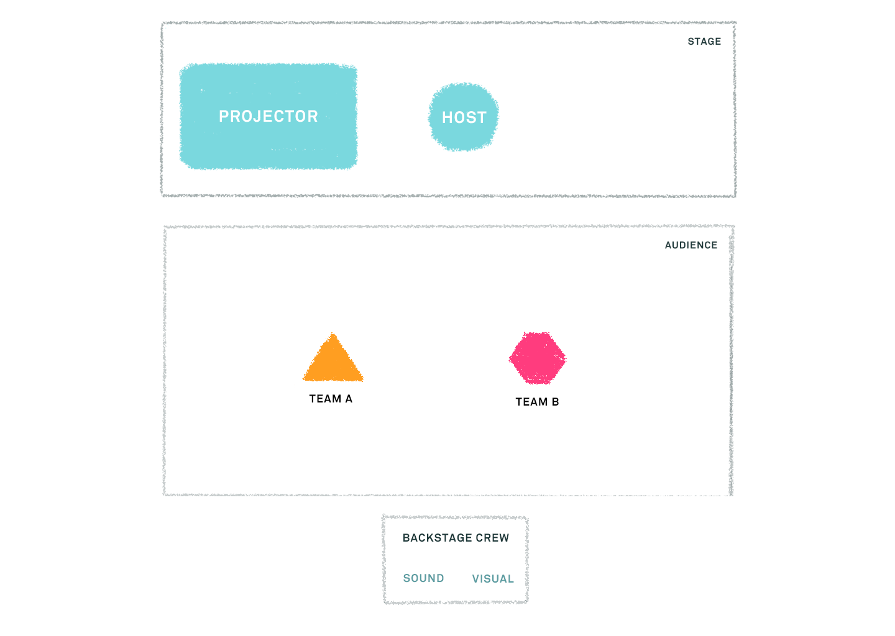

Early Bird is a web-based mobile game that engages guests before live shows at the Vancouver TheatreSports League. Designed to increase pre-show experience's entertainment value, Early Bird encourages timely arrival and primes the audience for the improv theatre ettiquete.
This project was created within a design research course where the focus was learning ethnographic research methods. We had the opportunity to work with the Vancouver Theatre Sports League over the span of 3 months with frequent meetings to create a final proposal that included a prototype, a video proposal, and research document.
In this team project, my specific roles included field research, developing insights, conducting interviews, and contributing towards developing the UI and interactions . Primary tools I used were Sketch, Principle, Photoshop, and Illustrator.
Vancouver TheatreSports League is a professional theatre organization whose mission is to challenge and inspire the community through improv-based work. The improv shows consists of two teams of actors that compete against each other on stage and perform improvised scenarios. They are overseen by a referee, who acts as a host and mediator for the show. Our team was tasked with conducting ethnographic research to help improve the show going experience for the attendees.
With the primary goal of this course is learning research methods, we spent majority of our time gathering insights through interviews, ethnographic observations, cultural probes and participatory workshops.
Based on our observations of guests during the pre-show, we observed that the long, narrow layout of the space created a lot of congestion points, particularly around the theatre doors & the bar area. We also noticed that staff would have to spend time organizing clusters of people, & maneuvering around guests to access certain staff areas, impeding their workflow.
Our team crafted 4 sets of cultural probes with tools that would allow us to learn about the show going experience from the perspective of the attendee and staff in a fun and engaging way.
We learnt the first time show attendees felt disconnected and nervous before the show starts as they are not sure what to expect.
Lastly, our team conducted a participatory workshop with mini-activities for the VTSL staff. The goal of the activities was to identify issues and co-design possible solutions. Interestingly, there were more insights uncovered through the staff discussing about their experiences with one another than through the activities themselves.
An important insight uncovered from these conversations was that some (first time) attendees aren't aware of the improv theatre etiquette- specifically around timeliness. As such, some guests tend to arrive at the show late, disrupting the actors' flow of performance. To avoid this issue, some late comers are requested to wait outside the theatre until the next act or intermission.
Based on the insights we gathered, we framed the following how might we questions to help us ideate for possible ways to intervene.
Being aware of the issues and insights we learnt from our research methods, we wanted our intervention to accomplish the following goals:
Similar to TimePlay, Early Bird is an interactive mobile game that engages guests 10-15 minutes prior to the live show encouraging them to arrive at the venue in a timely manner. Guests are encouraged to congregate in the theater, reducing the crowds in the hallways. The game structure mimics the improv show culture, priming the audience for live show. Winners of the game will receive prizes such as drink vouchers or show tickets.
We wanted our intervention to have the following attributes:
Front and Back of house: The host is an integral part of the transition from pre-show to in-show experience for guiding and priming the audience. We aim to help the host more easily prep the audience for the show and provide them with a novel method of engaging the crowd. We also wanted to include the backstage crew such as the sound and the visual technician, as they play a vital role in supporting the actor's live performance.
Competitive Teams: The two-team set up reflects the style of TheatreSports where the teams compete for victory. The audience is allowed to choose their team, instead of splitting the teams arbitrarily, to encourage conversation and competition amongst groups of friends.
When the guest connects to the VTSL wifi, they are prompted to join the game if they are interested in participating. Once connected, they are asked to join a team of their choice.
Earworm is one of the 2 mini-games our team developed for this intervention. In earworm one team chooses a prompt, that is meant to be an odd/unrecognizable sound. The sound crew plays the chosen sound clip, and the opposing team has to figure out where the kooky noise originates from.
The first team votes for the prompt they want the opposing team to guess. For the second round of the game, it is the opposing team that votes for the prompt.
While the audio technician plays the audio prompt, one team guesses what the sound is. The responses are displayed live on the projector screen for the audience to see discuss and laugh about.
At the end of each game, the team score gets displayed on the projector screen while the individual score is displayed on the smartphone.
After the mini-games, the final scoreboard is displayed and the winners of Early Bird can input their emails to claim their prizes. Prizes tend to be in the form of show tickets or food vouchers as this is an existing feature of their live show experience.